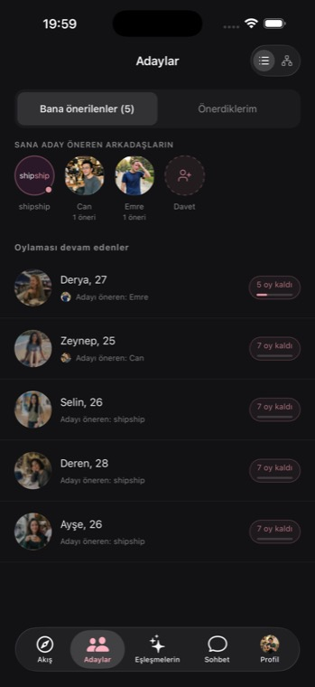
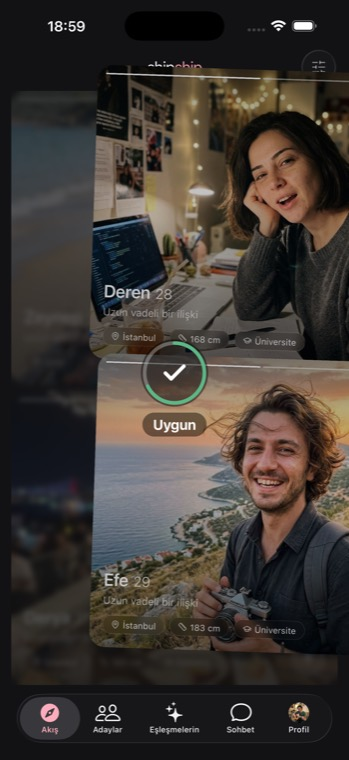
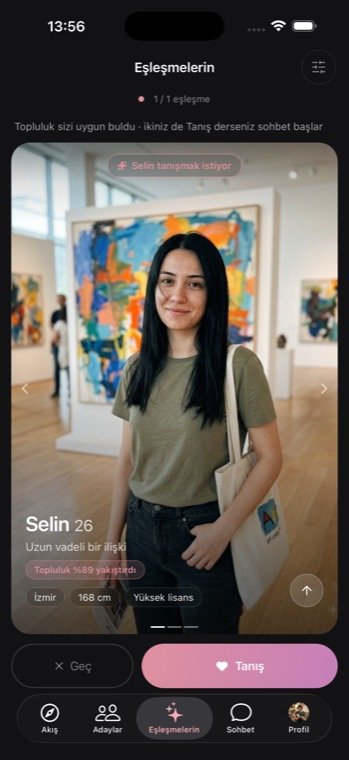
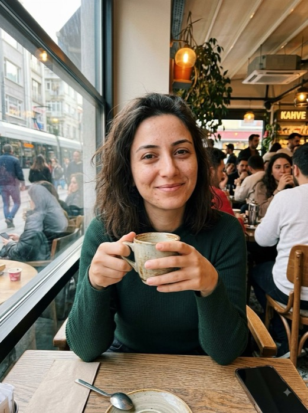
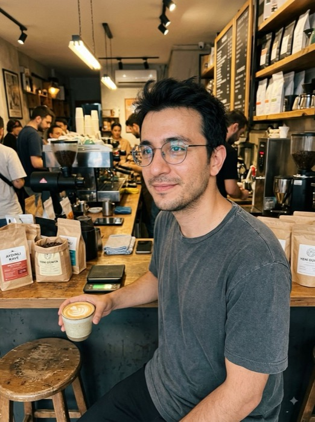

Adayını sen aramazsın. Profiline göre sistem, bazen de arkadaşların, sana uyabilecek birini yanına koyar.
İkili topluluğun önüne gelir. Oy kişiye değil, ikilinin uyumuna verilir.
Tanış ya da Geç. Sohbet ancak ikiniz de Tanış derse açılır.
Kaydırmaya devam et — oyu sen veriyorsun.




